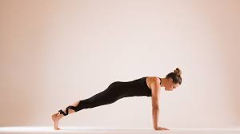
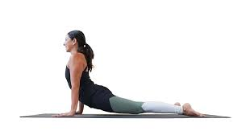
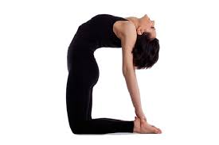

Intermediate Poses
1.Plank Pose

How to do it
-
Start in Downward-Facing Dog. Shift forward so your shoulders are stacked over your wrists. Draw your navel in toward your spine and keep your hips from dropping
-
Reach heels back as you lengthen the crown of your head forward. Ground down into hands, pushing the floor away beneath you. Lengthen through the arms and broaden your chest.
2.Upward Facing Dog

How to do it
-
Lie facedown on the floor. Bend elbows and place hands on the mat in line with lower ribs. Hug your elbows in line with your torso. Tuck your toes and take an inhale.
-
As you exhale, push the floor away like a push-up. Straighten your arms and broaden across the chest, hovering your hips a few inches above the floor at the same time.
3.Camel Pose

How to do it
- Kneel on the ground with your shins hip-width apart. Press the tops of your feet into the mat. Rest hands on your hips, thumbs near your lower back.
-
Take an inhale and press down into your shins. Elongate through the spine. On an exhale, reach your arms back toward your heels. Use the leverage to lift your chest up toward the sky and get a nice shoulder stretch.